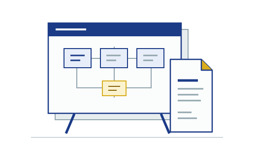
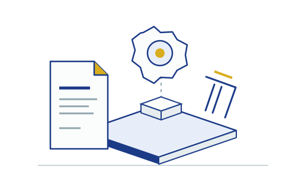

Instructional quality
Review content, organization, presentation, and assessment against the assigned rubric.
Exact source evidence or an explicit finding scoped to the
supplied text.
LSPU · College of Computer Studies
Four specialist perspectives, grounded in institutional rubrics. EquipED uses Gemma and Direct Preference Optimization to support curriculum mapping and alignment assessment.
Advisory assessments. Human decisions.


EQUIP ED: A MULTI-AGENT CURRICULUM MAPPING AND ALIGNMENT ASSESSMENT SYSTEM USING GEMMA WITH DIRECT PREFERENCE OPTIMIZATION
01 / Overview
Self-paced learning modules need to meet different institutional expectations. EquipED brings those perspectives into a traceable review workflow for LSPU Santa Cruz.
College of Computer Studies
BSCS and BSInfoTech
English
and Filipino materials
Manual module review requires separate checks for instructional quality, curriculum alignment, inclusivity, and intellectual property. Scores and feedback need a consistent rubric and a clear connection to the material being reviewed.
Support curriculum mapping and alignment assessment through specialist agents using Gemma, evidence from the submitted module, and institutional reference documents. Use Direct Preference Optimization to study how reviewed feedback can refine model behavior.
Generated findings are advisory. Selected text, OCR omissions, and unavailable references limit coverage. A completed evaluation is not institutional approval.
02 / Methodology
The submitted SLM stays authoritative. The server prepares authorized evidence; each harness applies its specialist rubric.
Extract PDF text and page identities, using OCR for scanned pages.
Document processingPrepare bounded text and references. Coordinator uses document-scoped embeddings.
Source preparationThe selected specialist produces scores and findings against the saved rubric.
Gemma + specialist harnessValidate and save results, then update the monitoring matrix deterministically.
Persistence + synthesisReviewed preference pairs inform adapter training. Held-out comparisons and human review remain necessary before publication.
03 / Specialist review
Each faculty evaluation runs one permitted specialist. Its completed results contribute to a progressive monitoring matrix.
Review content, organization, presentation, and assessment against the assigned rubric.
Assess organization and assessment, with a separate qualitative curriculum-alignment supplement.
Examine gender sensitivity, representation, and language using the configured scoring rules.
Cross-check citations and public sources, then review ownership, confidentiality, and academic rights.
04 / The system
A faculty portal for module evaluation and an administrator portal for references, rubrics, monitoring, and model management.
Review saved scorecards, inspect source quotations, record feedback, and export institutional forms.
Run standalone alignment checks against a selected syllabus or a course's mapped curriculum objectives.
Maintain reference material, manage rubric revisions, and inspect a matrix completed across all four domains.
05 / Measured results
An archived GAD comparison on eight held-out synthetic SLMs separates exact quotation grounding from score agreement.
A quotation occurs verbatim in its cited source chunk.
| Measure | Base | Fine-tuned |
|---|---|---|
| Mean absolute error Lower is better | 0.625 | 0.650 |
| Exact-score matches | 25 / 40 | 25 / 40 |
Grounding improved by 15 percentage points. Overall scoring did not improve in this comparison.
One run per condition. Targets were provisional AI-authored, user-reviewed references, not independent faculty scores. The SLMs shared a synthetic template. Exact quotation matching does not establish evidence relevance, reasoning quality, or generalization to real modules.
Read the archived study record06 / Research team
College of Computer Studies
Laguna State Polytechnic
University
Santa Cruz Campus
Researcher
Researcher
Researcher